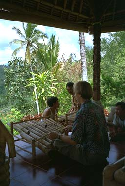

http://www2.hmc.edu/~alves/
alves@hmc.edu
Bill Alves is a composer based in California who has written extensively
for acoustic and electronic instruments as well as mixed media, including
the integration of music and computer video, robot choreography, and web
art. His works have been presented at many festivals, radio and television
shows, and other venues in the USA, Europe, and Asia. A CD of his computer
music, The Terrain of Possibilities is available on the EMF label, and
works of his are included on other recordings, including
tuning@eartha.mills.edu and ICMC 1999. In 1993-94 he was a Fulbright Senior
Scholar Fellow in Indonesia, a culture whose music has especially
influenced his writing. He currently teaches at Harvey Mudd College in
Claremont, California, where his courses include Computer Music, World
Music, and The Harmony of Sound and Light.
Harvey Mudd College
301 E. 12th St.
Claremont CA 91711 USA